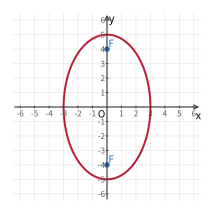
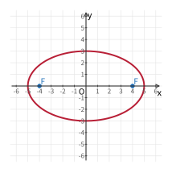
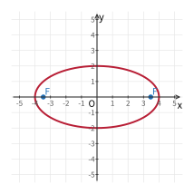

別冊練習問題 1 の解答 楕円の焦点と軸
(1) 楕円 \(25x^2+9y^2=225\) の焦点の座標と、長軸・短軸の長さを求めよ。
標準形に直す
両辺を \(225\) でわる。
\[\dfrac{x^2}{9}+\dfrac{y^2}{25}=1\]長軸の向きと \(a,\ b\)
分母の大きい方が長軸。\(y\) 軸方向が長軸。
\[a^2=25,\ b^2=9\ \Rightarrow\ a=5,\ b=3\]焦点
\[c=\sqrt{a^2-b^2}=\sqrt{25-9}=4\]\[F\,(0,\ 4),\quad F'\,(0,\ -4)\]長軸・短軸の長さ
\[\text{長軸 }2a=10,\qquad \text{短軸 }2b=6\]
【答案】
\[\text{焦点 }(0,\ 4),\ (0,\ -4);\ \text{長軸 }10,\ \text{短軸 }6\]答
(2) 楕円 \(9x^2+25y^2=225\) の焦点の座標と、長軸・短軸の長さを求めよ。
標準形に直す
両辺を \(225\) でわる。
\[\dfrac{x^2}{25}+\dfrac{y^2}{9}=1\]長軸の向きと \(a,\ b\)
分母の大きい方が長軸。\(x\) 軸方向が長軸。
\[a^2=25,\ b^2=9\ \Rightarrow\ a=5,\ b=3\]焦点
\[c=\sqrt{a^2-b^2}=\sqrt{25-9}=4\]\[F\,(4,\ 0),\quad F'\,(-4,\ 0)\]長軸・短軸の長さ
\[\text{長軸 }2a=10,\qquad \text{短軸 }2b=6\]
【答案】
\[\text{焦点 }(4,\ 0),\ (-4,\ 0);\ \text{長軸 }10,\ \text{短軸 }6\]答
(3) 楕円 \(1x^2+4y^2=16\) の焦点の座標と、長軸・短軸の長さを求めよ。
標準形に直す
両辺を \(16\) でわる。
\[\dfrac{x^2}{16}+\dfrac{y^2}{4}=1\]長軸の向きと \(a,\ b\)
分母の大きい方が長軸。\(x\) 軸方向が長軸。
\[a^2=16,\ b^2=4\ \Rightarrow\ a=4,\ b=2\]焦点
\[c=\sqrt{a^2-b^2}=\sqrt{16-4}=2 \sqrt{3}\]\[F\,(2 \sqrt{3},\ 0),\quad F'\,(- 2 \sqrt{3},\ 0)\]長軸・短軸の長さ
\[\text{長軸 }2a=8,\qquad \text{短軸 }2b=4\]
【答案】
\[\text{焦点 }(2 \sqrt{3},\ 0),\ (- 2 \sqrt{3},\ 0);\ \text{長軸 }8,\ \text{短軸 }4\]答